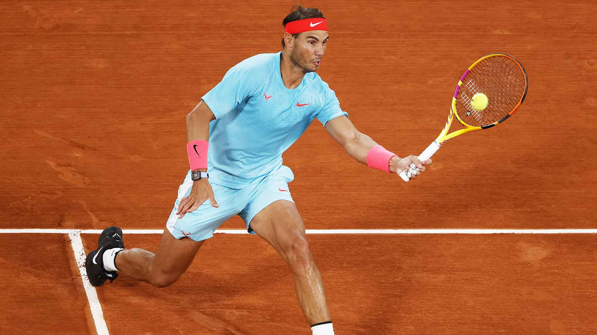

Span
Esta etiqueta la usamos para seleccionar una palabra, frase o incluso texto para cambiar sus propiedades sin alterar la estructura del texto, es decir, sin saltos de línea . Como siempre para cambiar estas propiedades escribimos en style el nombre de la clase o el de la id con sus respectivos "." y "#"
Un ejemplo de esto es lo que hemos usado para las palabra en rojo del párrafo anterior.
Div
Esta etiqueta la usamos también para seleccionar una palabra, frase o texto para modificar las propiedades de estos, pero al contrario que con span, con esta etiqueta creamos un bloque, es decir, provocamos un salto de línea. Y al igual que con el span, escribimos dentro de style el nombre de la clase o la id.
En mi caso, he usado uno para el título de la página y otro para el cuerpo de la página.
Overflow
Esta propiedad la usamos en caso de que al establecer el ancho y el alto de un bloque con div no aparezca todo el texto pues no cabe en ese espacio. Entonces utilizamos overflow escribiendo dentro de las propiedades del div esta etiqueta. Si queremos que aparezca una barra de desplazamiento entonces escribimos auto. Hay otras opciones mucho menos usadas como visible y hidden porque no muestran todo el contenido del bloque.
A continuación vamos a ver un ejemplo:
Box model

Como se puede ver en la imagen, los elementos del modelo de caja son:
- Margen: es el área transparente alrededor de la caja que la separa de otros elementos. Podemos especificar el margen de cada lado. Escribimos margin en Visual Studio Code.
- Borde: es el borde del bloque. le podemos dar tres propiedades: el grosor, el estilo y el color. Escribimos border.
- Relleno: es el espacio que existe entre el borde y el contenido del bloque, por tanto lo usamos para que el contenido no quede pegado al borde. Escribimos padding.
- Contenido: es el texto que hayamos escrito en HTML.
Positioning
Relative
Posiciona el bloque respecto a los otros elementos.Escribimos en style dentro de las propiedades del bloque o elemento position:relative;.
Absolute
Posiciona el bloque respecto a la página web.Escribimos en style dentro de las propiedades del bloque o elemento position:absolute;.
Fixed
Posiciona el bloque respecto a la ventana.Escribimos en style dentro de las propiedades del bloque o elemento position:fixed;.
El ejemplo es la imagen que aparece abajo a la derecha.
Z-index
Esta es otra propiedad del bloque para establecer un orden de superposición entre los distintos elementos.
Float
Esta etiqueta la usamos para poner un elemento a un lado del bloque sin que el resto de elementos del bloque no se superpongan. Para usarlo escribimos en las propiedades del elemento una nueva propiedad: float y a continuación none, si no queremos que flote o left o right si queremos que flote a izquierda o a derecha.
El ejemplo es la imagen que aparece al lado.
Clear
Esta propiedad la usamos en caso de que queramos que un elemento no aparezca a un lado de otro elemento flotante. Podemos especificar que no aparezca a la derecha, la izquierda o ambos de un elemento flotante escrbiendo dentro de la propiedad clear las opciones right, left o both.
El ejemplo en que uso esto es en el último párrafo del apartado anterior.